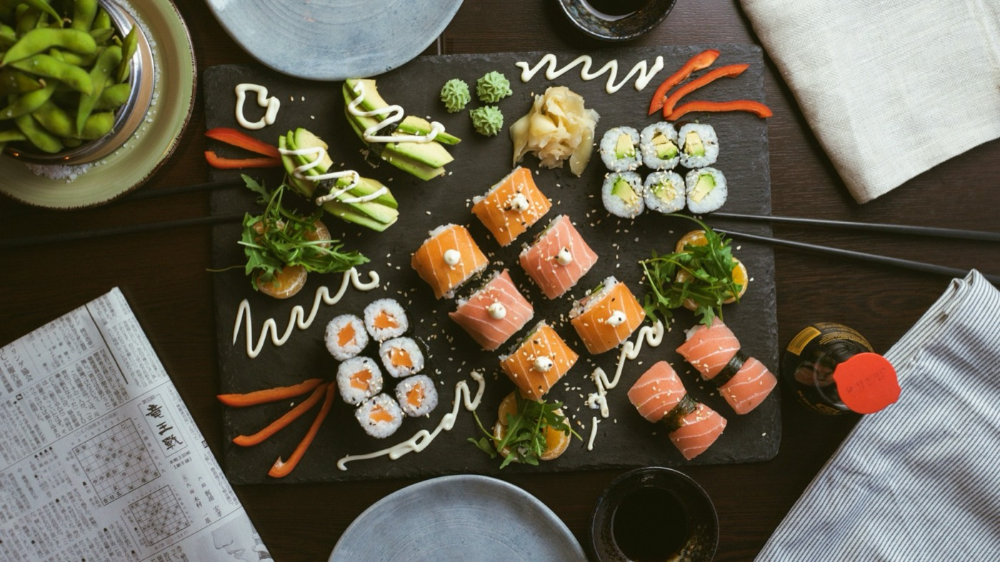

The Omakase Pass · Nashville · Nº 002
The Sushi Party: a private sushi chef for bachelorette and birthday parties.
A live sushi station and a chef working the room. Handrolls, nigiri, and platters made continuously: social, abundant, and unhurried.
$85 per person · $600 event minimum · up to 25 guests
Bachelorette weekends · birthdays · celebrations of any kind

Some nights aren't meant to be seated. A bachelorette weekend, a birthday that spills across the kitchen, a house full of people who came to celebrate — these want movement. The Sushi Party puts a chef and a live station in the middle of the room, sending out handrolls and nigiri made to order for as long as the party runs.
It's hands-on and a little theatrical in the best way: guests drift over, watch a piece come together, and drift back into the room with it. No caterer's chafing dishes, no buffet gone lukewarm — just fish cut to order and a chef who reads the energy of the night. It's the kind of thing people actually remember, and talk about, well after.
Your chef brings everything but the room: the fish, the ingredients, the tools, the setup, and the cleanup. You bring the guest list and the reason to celebrate.
Founding pricing for our first Nashville events. Final quotes depend on menu and party size. See the frequently asked questions.